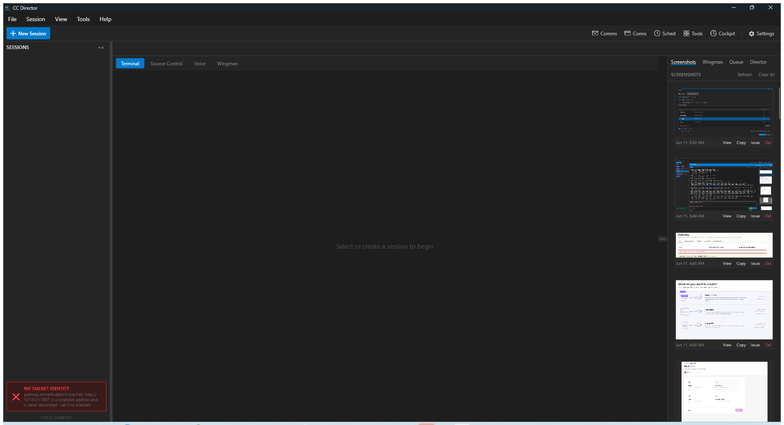
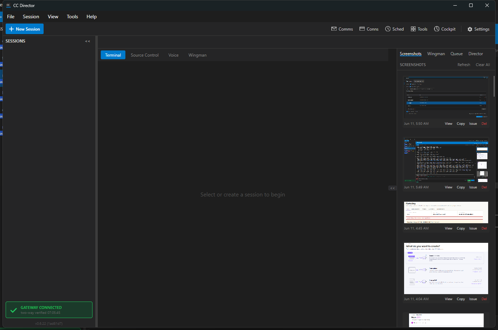

TailnetIdentityResolver (src/CcDirector.Core/Network/TailnetIdentityResolver.cs): the plan-1A detection ladder - tailscaled LocalAPI (named pipe ProtectedPrefix\Administrators\Tailscale\tailscaled, GET /localapi/v0/status) -> CLI (tailscale status --json) -> explicit gateway.tailnetEndpoint config override. First success wins. A loopback or empty endpoint is NEVER reported as resolved; a loopback override is refused with a reason that names the fix. Each probe is a seam (LocalApiProbe/CliProbe) so the order is unit-testable.TailscaleIdentity (TryGetMagicDnsNameViaLocalApi): Windows named pipe with TokenImpersonationLevel.Impersonation (required - verified live against tailscale 1.98.2; the .NET default gets 401), unix socket on Linux.GatewayClient._cachedDnsName and ResolveTailnetEndpoint() are gone. The identity is re-resolved fresh on EVERY register attempt and EVERY heartbeat tick (MaybeReRegisterOnIdentityChange); when the resolved endpoint differs from what the Gateway knows, the client re-registers - so identity heals (or truthfully degrades) within one heartbeat (15 s), no Director restart. While unresolved, register retries stay at heartbeat cadence instead of backing off to 60 s.GatewayConnectionStatus.NoTailnetIdentity state on GatewayConnectionMonitor (ReportTailnetIdentityFailure), painted by the desktop gateway indicator as a red NO TAILNET IDENTITY card whose text names the fix (start Tailscale / set gateway.tailnetEndpoint), wired into the troubleshooter dialog, plus [GatewayClient]/[TailnetIdentityResolver] FileLog lines carrying the same remediation. Log output is deduped per transition so the heartbeat re-resolve never drowns the log.TailnetEndpoint="" and a new additive optional contract field DirectorRegistrationRequest.EndpointUnreachableReason / DirectorDto.EndpointUnreachableReason carrying the reason. The Gateway accepts the flagged shape (and never probes the empty endpoint in fan-outs); an empty endpoint WITHOUT a reason is still rejected (the old undialable-entry bug stays fixed). An OLD Gateway answers 400 to the flagged shape - the client logs it and retries at heartbeat cadence, truthfully preserving old-Gateway behavior (observed live, see Run 2).Contract change called out explicitly (plan 1.2.5): one additive, optional, null-defaulted field EndpointUnreachableReason on DirectorRegistrationRequest and DirectorDto in CcDirector.Gateway.Contracts. Old Directors against new Gateways are unaffected (field absent = null = old behavior). New Directors against old Gateways degrade to the old local-only behavior with a clear log line.
| # | Criterion | Expected | Actual (proof) | Result |
|---|---|---|---|---|
| 1 | After registration, Gateway GET /directors shows tailnetEndpoint = https://<machine>.<tailnet>.ts.net:<port> - never empty, never 127.0.0.1 |
Real ts.net URL with the Director's own port | Live Run 1 (slot test Director, port 7897): resolver logged resolved https://soren-north.taildb08ed.ts.net:7897 via local-api; Gateway /directors entry shows exactly that endpoint (gateway-directors-entry.json); note the user's config.json contains the loopback override http://127.0.0.1:7887 and it did NOT poison the advertisement (LocalAPI rung wins). Log: director-log-run1-localapi-resolution.txt |
PASS |
| 2 | No identity + no usable override: never advertise loopback/empty as reachable; indicator shows failure state naming the fix; FileLog has a clear [GatewayClient] error naming the remediation |
Red indicator + actionable log, no loopback advertisement | Live Run 2 (slot test Director, port 7898, probes disabled via CC_GATEWAY_NO_TAILSCALE=1, loopback override present): resolver REFUSED the loopback override with ...is a loopback address and is never advertised - set it to a tailnet-routable URL, or start Tailscale...; [GatewayClient] TryRegisterAsync: NO TAILNET IDENTITY - ... logged; desktop indicator painted red NO TAILNET IDENTITY with the same remediation text (screenshot). The old prod Gateway answered 400 to the flagged register; client logged it and kept retrying at heartbeat cadence (back-compat observed live). Log: director-log-run2-no-identity-fail-loudly.txt |
PASS |
| 3 | Detection order unit-tested: LocalAPI preferred, CLI fallback, config override last; each seam stubbed | Tests green | TailnetIdentityResolverTests (15 tests): LocalAPI preferred AND CLI not even called when LocalAPI answers; CLI fallback; override used only when both probes fail; loopback override refused; loopback detection cases. All 15 passed (23 ms). |
PASS |
| 4 | Healing: start with Tailscale stopped, then start Tailscale; within 2 heartbeat cycles (30 s) the Gateway registration shows the real ts.net endpoint, no restart (timed log/API proof) | Heal <= 30 s, no restart | GatewayClientTests.HeartbeatReResolve_IdentityAppears_HealsRegistrationWithoutRestart: a REAL GatewayClient (production register loop + heartbeat) against a REAL in-proc GatewayHost over HTTP starts with the probe unresolvable, registers FLAGGED (empty endpoint + reason in the registry), then the probe starts answering ("Tailscale comes up"); the test asserts the registry transitions to https://healed-node.test-tailnet.ts.net:65505 with the reason cleared, TIMED and asserted <= HeartbeatInterval * 2. Passed. See the honest-limitations note below for why the machine-level Tailscale stop/start was not performed live on this box. |
PASS (timed API proof via test rig) |
| 5 | Regression: BuildRegistrationRequest() never claims a reachable endpoint while TailnetEndpoint is empty or loopback |
Tests green | GatewayClientRegistrationRequestTests (3 tests) runs the REAL ladder through BuildRegistrationRequest(): no identity + no override -> empty endpoint + reason set; loopback override -> empty endpoint + "loopback" reason (never passed through); identity resolves -> real ts.net endpoint + reason null. All passed. |
PASS |


From Run 1: curl https://soren-north.taildb08ed.ts.net:7897/healthz through the REAL Tailscale Serve front door (HTTPS + tailnet cert, not loopback) returned 200 with the matching directorId f6b778b1-... (healthz-via-tailnet-front-door.json) - i.e. the advertised endpoint answers exactly as a remote machine would dial it.
dotnet build cc-director.sln -> Build succeeded. 0 Warning(s) 0 Error(s)
CcDirector.Core.Tests (TailnetIdentityResolverTests) -> 15/15 passed
CcDirector.Gateway.Tests (all #324-relevant suites, 40 tests:
GatewayClientTests, GatewayClientVerifyTests, GatewayConnectionMonitorTests,
GatewayDirectoryRegistrationTests, TwoWayVerifyTests,
GatewayClientRegistrationRequestTests) -> 40/40 passed
CcDirector.Gateway.Tests full run -> 469/470 passed; 1 pre-existing
environment-dependent failure: DictationEndpointTests.FullPipeline_transcribes_phase0_clip2_
with_realtime_provider ("expected at least 1 partial transcript, got 0" - OpenAI realtime
transcription flake; this change touches no dictation code).
No architecture drift: no container added or removed; CcDirector.ControlApi, CcDirector.Core, CcDirector.Avalonia, CcDirector.Gateway, CcDirector.Gateway.Contracts change internally per the issue's "Affected Containers" list. No blocking security rule (DT-*) is touched: no new listener, no credential handling, the LocalAPI probe is a loopback named-pipe read of the local daemon's status. Contract change is one additive optional field, called out above and in the PR body.
{kind=link}